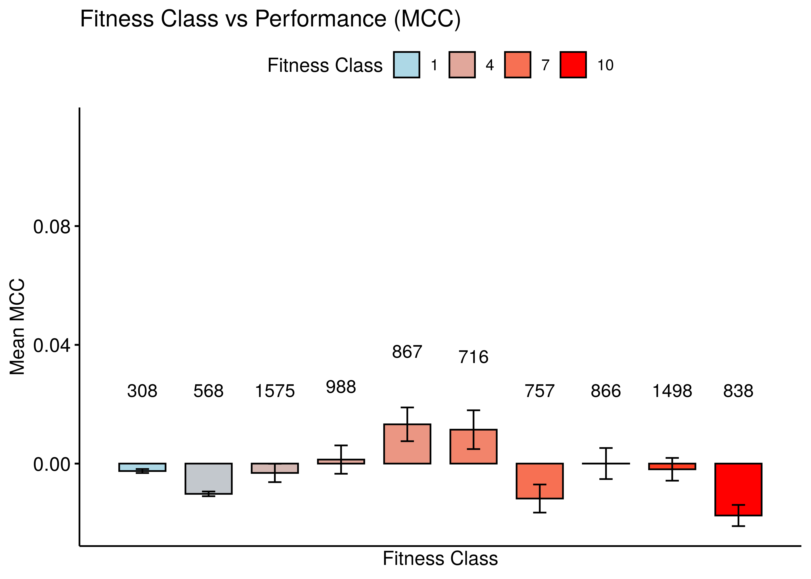
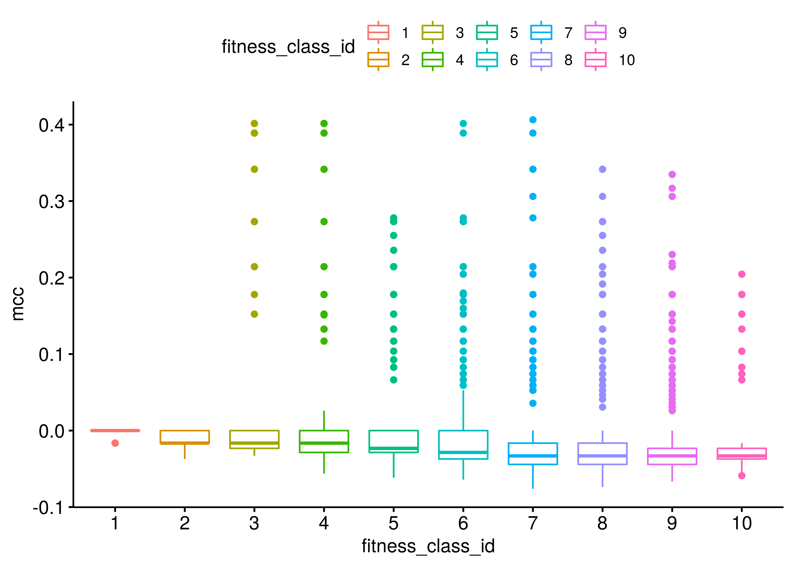
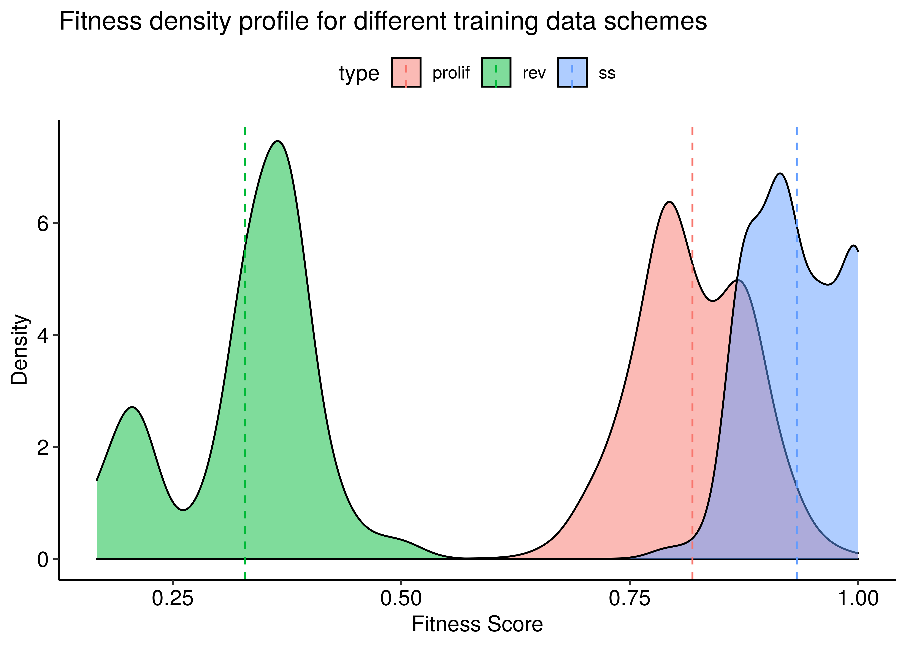
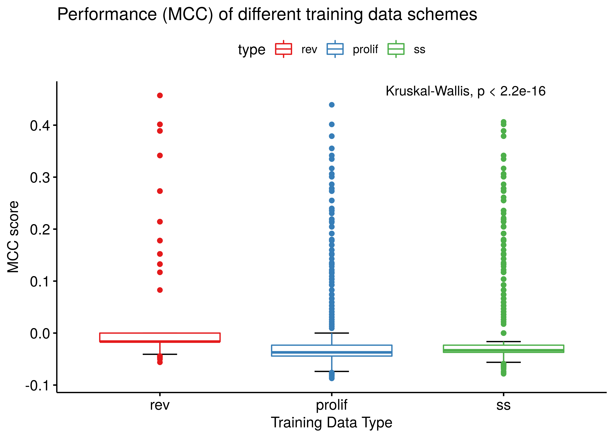
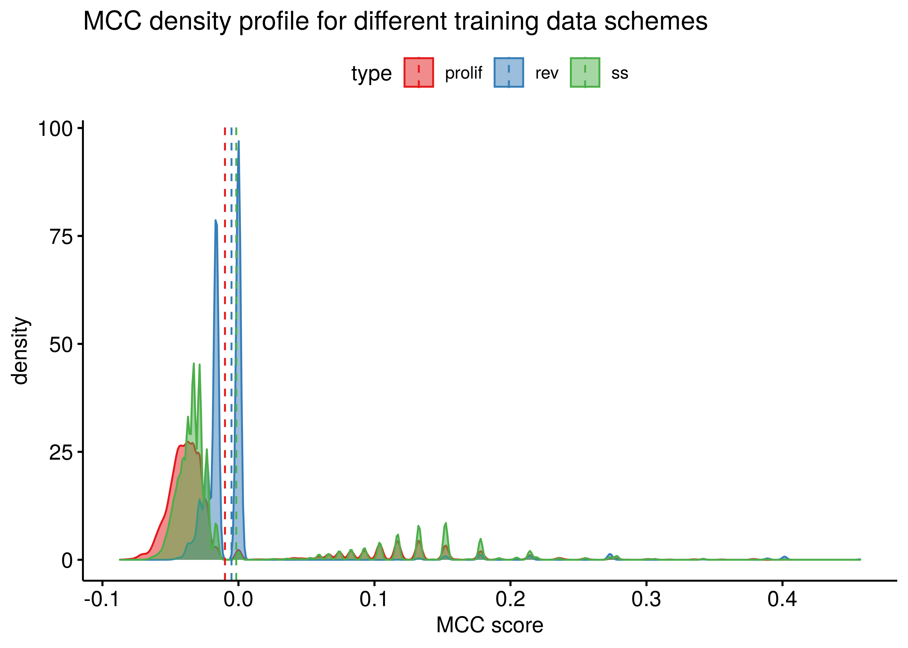
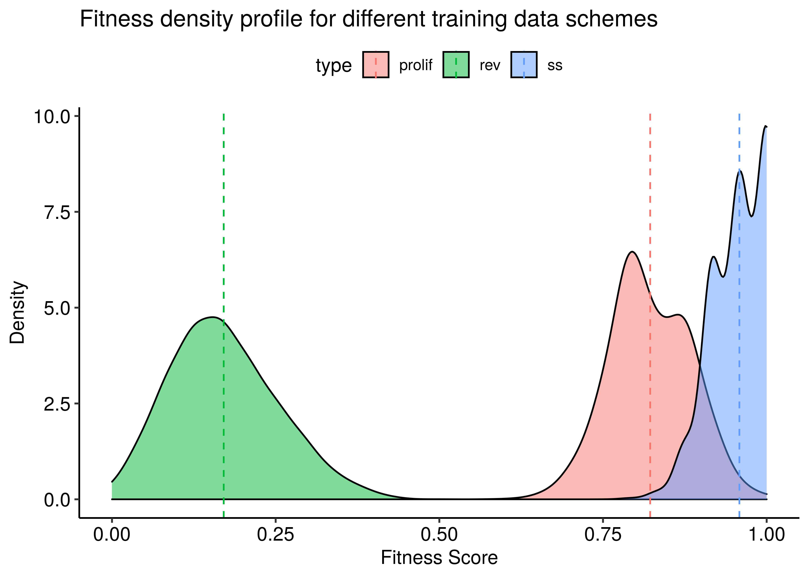
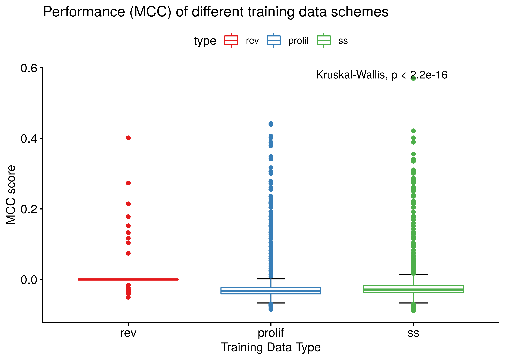
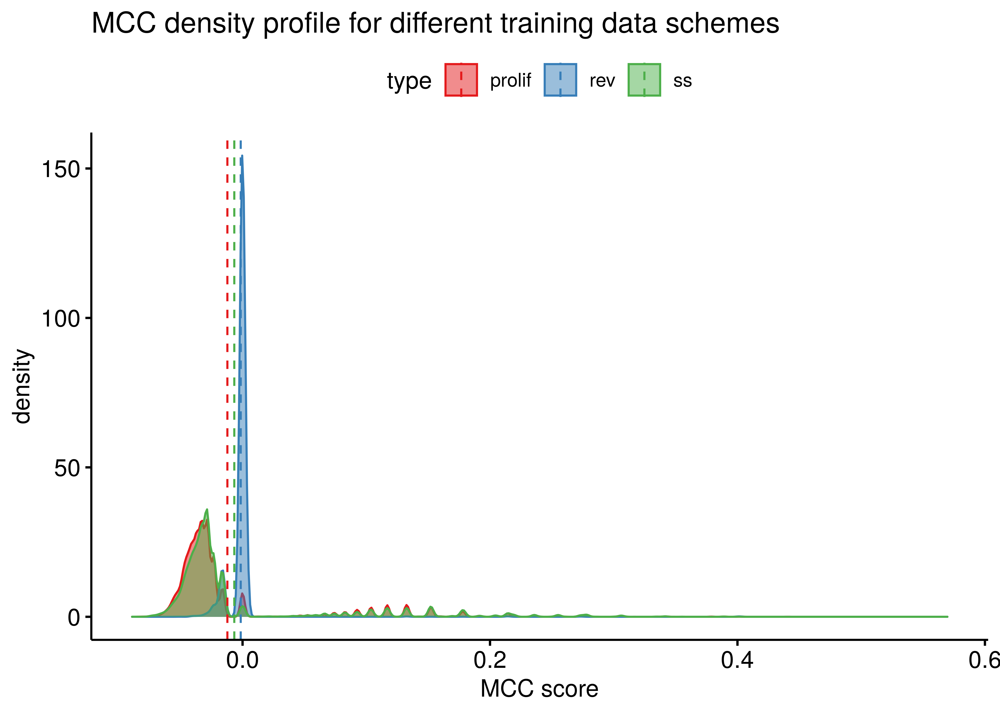

Fitness vs Performance Analysis (AGS paper I)
Last updated: 08 June, 2020
Intro
Main question: is there a correlation between models fitness to the steady state and their performance as measured by the MCC score?
All boolean model simulations were done using the druglogics-synergy Java module, version 1.2.0: git checkout v1.2.0.
This analysis was done after I concluded the ROC and PR analysis for the AGS paper I (see here). Since the results of this analysis are negative, I put them here as an investigation and a reference guide for future endeavors!
Input
Load libraries:
library(xfun)
library(emba)
library(usefun)
library(dplyr)
library(tibble)
library(stringr)
library(ggpubr)
library(ggplot2)
library(Ckmeans.1d.dp)Load the AGS steady state:
# get the AGS steady state
steady_state_file = "data/steadystate"
lines = readLines(steady_state_file)
ss_data = unlist(strsplit(x = lines[8], split = "\t"))
ss_mat = stringr::str_split(string = ss_data, pattern = ":", simplify = TRUE)
colnames(ss_mat) = c("nodes", "states")
ss_tbl = ss_mat %>% as_tibble() %>% mutate_at(vars(states), as.integer)
steady_state = ss_tbl %>% pull(states)
names(steady_state) = ss_tbl %>% pull(nodes)
usefun::pretty_print_vector_names_and_values(vec = steady_state)CASP3: 0, CASP8: 0, CASP9: 0, FOXO_f: 0, RSK_f: 1, CCND1: 1, MYC: 1, RAC_f: 1, JNK_f: 0, MAPK14: 0, AKT_f: 1, MMP_f: 1, PTEN: 0, ERK_f: 1, KRAS: 1, PIK3CA: 1, S6K_f: 1, GSK3_f: 0, TP53: 0, BAX: 0, BCL2: 1, CTNNB1: 1, TCF7_f: 1, NFKB_f: 1
Load observed synergies:
# get observed synergies for Cascade 2.0
observed_synergies_file = "data/observed_synergies_cascade_2.0"
observed_synergies = emba::get_observed_synergies(observed_synergies_file)
pretty_print_vector_values(vec = observed_synergies, vector.values.str = "observed synergies")6 observed synergies: AK-BI, 5Z-PI, PD-PI, BI-D1, PI-D1, PI-G2
Flip training data analysis
The idea here is to generate many training data files from the steady state, where some of the nodes will have their states flipped to the opposite state (\(0\) to \(1\) and vice versa). That way, we can train models to different steady states, ranging from ones that differ to just a few nodes states up to a steady state that is the complete reversed version of the one used in the simulations.
Using the gen_training_data.R script, we first chose a few number of flips (\(11\) flips) ranging from \(1\) to \(24\) (all nodes) in the steady state. Then, for each such flipping-nodes value, we generated \(20\) new steady states with a randomly chosen set of nodes whose value is going to flip. Thus, in total, \(205\) training data files were produced (\(205 = 9 \times 20 + 24 + 1\), where from the \(11\) number of flips, the one flip happens for every node (\(24\) different steady states) and flipping all the nodes generates \(1\) completely reversed steady state).
Running the script run_druglogics_synergy_training.sh from the druglogics-synergy repository root (version 1.2.0: git checkout v1.2.0), we get the simulation results for each of these training data files.
Note that in the CASCADE 2.0 configuration file (config) we changed the number of simulations to (\(15\)) for each training data file, the attractor tool used was biolqm_stable_states and the synergy_method: hsa.
The generated training data files (training-data-files.tar.gz) and the results from the simulations (fit-vs-performance-results.tar.gz) are stored in Zenodo.
To load the data, download the results (fit-vs-performance-results.tar.gz) and extract it to a directory of your choice with the following commands: mkdir fit-vs-performance-results and tar -C fit-vs-performance-results/ -xzvf fit-vs-performance-results.tar.gz.
Then use the next R code to create the res data.frame (I have already saved the result):
# change appropriately
data_dir = "/home/john/tmp/ags_paper_res/fit-vs-performance-results"
res_dirs = list.files(data_dir, full.names = TRUE)
data_list = list()
index = 1
for (res_dir in res_dirs) {
model_predictions_file = list.files(path = res_dir, pattern = "model_predictions.tab", full.names = TRUE)
models_dir = paste0(res_dir, "/models")
model_predictions = emba::get_model_predictions(model_predictions_file)
models_link_operators = emba::get_link_operators_from_models_dir(models_dir)
# you get messages for models with {#stable states} != 1
models_stable_states = emba::get_stable_state_from_models_dir(models_dir)
# same order => same model per row (also pruned if != 1 stable states)
model_predictions = model_predictions[rownames(models_stable_states),]
models_link_operators = models_link_operators[rownames(models_stable_states),]
# calculate models MCC scores
models_mcc = calculate_models_mcc(
observed.model.predictions = model_predictions %>% select(all_of(observed_synergies)),
unobserved.model.predictions = model_predictions %>% select(-all_of(observed_synergies)),
number.of.drug.comb.tested = ncol(model_predictions))
# calculate models fitness to AGS steady state
models_fit = apply(models_stable_states[, names(steady_state)], 1,
usefun::get_percentage_of_matches, steady_state)
# check data consistency
stopifnot(all(names(models_mcc) == rownames(models_link_operators)))
stopifnot(all(names(models_mcc) == names(models_fit)))
# get link operator mutation code per model
# same code => exactly same link operator mutations => exactly the same model
link_mutation_binary_code = unname(apply(models_link_operators, 1, paste, collapse = ""))
# bind all to one (OneForAll)
df = bind_cols(model_code = link_mutation_binary_code, mcc = models_mcc, fitness = models_fit)
data_list[[index]] = df
index = index + 1
}
res = bind_rows(data_list)
# prune to unique models
res = res %>% distinct(model_code, .keep_all = TRUE)
saveRDS(object = res, file = "res_flip.rds")We split the models from the simulations to \(10\) fitness classes, their centers being:
res = readRDS(file = "data/res_flip.rds")
### Fitness classes vs MCC
fit_classes = res %>% pull(fitness) %>% unique() %>% length()
fit_result = Ckmeans.1d.dp(x = res$fitness, k = round(fit_classes/2))
fit_result$centers## [1] 0.2192911 0.3188087 0.3915344 0.4777328 0.5605536 0.6489758 0.7301299
## [8] 0.8141840 0.8982254 0.9784706fitness_class_id = fit_result$cluster
res = res %>% add_column(fitness_class_id = fitness_class_id)
fit_stats = desc_statby(res, measure.var = "mcc", grps = c("fitness_class_id"), ci = 0.95)
ggbarplot(fit_stats, title = "Fitness Class vs Performance (MCC)",
x = "fitness_class_id", y = "mean", xlab = "Fitness Class",
ylab = "Mean MCC", ylim = c(min(fit_stats$mean - 2*fit_stats$se), max(fit_stats$mean) + 0.1),
label = fit_stats$length, lab.vjust = -5, fill = "fitness_class_id") +
scale_x_discrete(labels = round(fit_stats$fitness, digits = 2)) +
scale_fill_gradient(low = "lightblue", high = "red", name = "Fitness Class",
guide = "legend", breaks = c(1,4,7,10)) +
geom_errorbar(aes(ymin=mean-2*se, ymax=mean+2*se), width = 0.2, position = position_dodge(0.9))

# useful
#res %>% group_by(fitness_class_id) %>% summarise(avg = mean(mcc), count = n()) %>% print(n = 21)No correlation whatsoever!
Reverse SS vs SS method
Next, I tried increasing the simulation output data and run only the extreme cases.
So the next results are for a total of \(5000\) simulations (\(15000\) models), fitting to steady state (ss), the complete opposite/flipped steady state (rev) and also the proliferation profile (prolif).
I ran these simulations 3 times, one with link operator mutations only, one with topology mutations only and one with both mutations applied in the models.
The drabme synergy method used was HSA.
For the link operator models the biolqm_stable_states attractor_tool option was used and for the other 2 parameterizations the bnet_reduction_reduced.
First download the Zenodo dataset and then extract the 5000sim-hsa-*-res.tar.gz compressed archives in a directory.
Load the data using the following R code (already saved the results):
# simulation results directories (do not add the ending path character '/')
res_dirs = c("/home/john/tmp/ags_paper_res/topo-and-link/5000-sim-hsa-res/cascade_2.0_rev_5000sim_bnet_hsa_20200601_054944/",
"/home/john/tmp/ags_paper_res/topo-and-link/5000-sim-hsa-res/cascade_2.0_rand_5000sim_bnet_hsa_20200601_155644/",
"/home/john/tmp/ags_paper_res/topo-and-link/5000-sim-hsa-res/cascade_2.0_ss_5000sim_bnet_hsa_20200531_202847/")
data_list = list()
index = 1
for (res_dir in res_dirs) {
if (str_detect(pattern = "cascade_2.0_ss", string = res_dir)) {
type = "ss"
} else if (str_detect(pattern = "cascade_2.0_rev", string = res_dir)) {
type = "rev"
} else {
type = "prolif"
}
model_predictions_file = list.files(path = res_dir, pattern = "model_predictions.tab", full.names = TRUE)
models_dir = paste0(res_dir, "/models")
model_predictions = emba::get_model_predictions(model_predictions_file)
# you get messages for models with {#stable states} != 1
models_stable_states = emba::get_stable_state_from_models_dir(models_dir)
# same order => same model per row (also pruned if != 1 stable states)
model_predictions = model_predictions[rownames(models_stable_states),]
# calculate models MCC scores
models_mcc = calculate_models_mcc(
observed.model.predictions = model_predictions %>% select(all_of(observed_synergies)),
unobserved.model.predictions = model_predictions %>% select(-all_of(observed_synergies)),
number.of.drug.comb.tested = ncol(model_predictions))
# calculate models fitness to AGS steady state
models_fit = apply(models_stable_states[, names(steady_state)], 1,
usefun::get_percentage_of_matches, steady_state)
# check data consistency
stopifnot(all(names(models_mcc) == names(models_fit)))
# bind all to one (OneForAll)
df = bind_cols(mcc = models_mcc, fitness = models_fit, type = rep(type, length(models_fit)))
data_list[[index]] = df
index = index + 1
}
res = bind_rows(data_list)
# choose one (depends on the `res_dirs`)
res_link = res
#res_topo = res
#res_link_and_topo = res
saveRDS(res_link, file = "res_link.rds")
#saveRDS(res_topo, file = "res_topo.rds")
#saveRDS(res_link_and_topo, file = "res_link_and_topo.rds")Results
Link operator mutated models
res = readRDS(file = "data/res_link.rds")
mean_fit = res %>% group_by(type) %>% summarise(mean = mean(fitness))
ggplot() +
geom_density(data = res, aes(x=fitness, group=type, fill=type), alpha=0.5, adjust=3) +
geom_vline(data = mean_fit, aes(xintercept = mean, color=type), linetype="dashed") +
xlab("Fitness Score") +
ylab("Density") +
ggtitle("Fitness density profile for different training data schemes") +
ggpubr::theme_pubr()
ggboxplot(data = res, x = "type", y = "mcc",
color = "type", palette = "Set1", order = c("rev", "prolif", "ss"),
bxp.errorbar = TRUE, bxp.errorbar.width = 0.2,
title = "Performance (MCC) of different training data schemes",
ylab = "MCC score", xlab = "Training Data Type") +
stat_compare_means(label.x = 2.5)
ggdensity(data = res, x = "mcc", color = "type", add = "mean",
fill = "type", palette = "Set1", xlab = "MCC score",
title = "MCC density profile for different training data schemes")
Topology-mutated models
res = readRDS(file = "data/res_topo.rds")
mean_fit = res %>% group_by(type) %>% summarise(mean = mean(fitness))
ggplot() +
geom_density(data = res, aes(x=fitness, group=type, fill=type), alpha=0.5, adjust=3) +
geom_vline(data = mean_fit, aes(xintercept = mean, color=type), linetype="dashed") +
xlab("Fitness Score") +
ylab("Density") +
ggtitle("Fitness density profile for different training data schemes") +
ggpubr::theme_pubr()
ggboxplot(data = res, x = "type", y = "mcc",
color = "type", palette = "Set1", order = c("rev", "prolif", "ss"),
bxp.errorbar = TRUE, bxp.errorbar.width = 0.2,
title = "Performance (MCC) of different training data schemes",
ylab = "MCC score", xlab = "Training Data Type") +
stat_compare_means(label.x = 2.5)
ggdensity(data = res, x = "mcc", color = "type", add = "mean",
fill = "type", palette = "Set1", xlab = "MCC score",
title = "MCC density profile for different training data schemes")
Both mutations on models
res = readRDS(file = "data/res_link_and_topo.rds")
mean_fit = res %>% group_by(type) %>% summarise(mean = mean(fitness))
ggplot() +
geom_density(data = res, aes(x=fitness, group=type, fill=type), alpha=0.5, adjust=3) +
geom_vline(data = mean_fit, aes(xintercept = mean, color=type), linetype="dashed") +
xlab("Fitness Score") +
ylab("Density") +
ggtitle("Fitness density profile for different training data schemes") +
ggpubr::theme_pubr()
ggboxplot(data = res, x = "type", y = "mcc",
color = "type", palette = "Set1", order = c("rev", "prolif", "ss"),
bxp.errorbar = TRUE, bxp.errorbar.width = 0.2,
title = "Performance (MCC) of different training data schemes",
ylab = "MCC score", xlab = "Training Data Type") +
stat_compare_means(label.x = 2.5)
ggdensity(data = res, x = "mcc", color = "type", add = "mean",
fill = "type", palette = "Set1", xlab = "MCC score",
title = "MCC density profile for different training data schemes")
R session info
R version 3.6.3 (2020-02-29)
Platform: x86_64-pc-linux-gnu (64-bit)
Running under: Ubuntu 18.04.4 LTS
Locale:
LC_CTYPE=en_US.UTF-8 LC_NUMERIC=C
LC_TIME=en_US.UTF-8 LC_COLLATE=en_US.UTF-8
LC_MONETARY=en_US.UTF-8 LC_MESSAGES=en_US.UTF-8
LC_PAPER=en_US.UTF-8 LC_NAME=C
LC_ADDRESS=C LC_TELEPHONE=C
LC_MEASUREMENT=en_US.UTF-8 LC_IDENTIFICATION=C
Package version:
abind_1.4-5 assertthat_0.2.1 backports_1.1.7
base64enc_0.1.3 BH_1.72.0.3 bibtex_0.4.2.2
bookdown_0.19 boot_1.3.25 broom_0.5.6
callr_3.4.3 car_3.0-8 carData_3.0-4
cellranger_1.1.0 Ckmeans.1d.dp_4.3.2 cli_2.0.2
clipr_0.7.0 colorspace_1.4-1 compiler_3.6.3
corrplot_0.84 cowplot_1.0.0 crayon_1.3.4
curl_4.3 data.table_1.12.8 desc_1.2.0
digest_0.6.25 dplyr_0.8.5 ellipsis_0.3.1
emba_0.1.5 evaluate_0.14 fansi_0.4.1
farver_2.0.3 forcats_0.5.0 foreign_0.8-76
gbRd_0.4-11 generics_0.0.2 ggplot2_3.3.0
ggpubr_0.3.0 ggrepel_0.8.2 ggsci_2.9
ggsignif_0.6.0 glue_1.4.1 graphics_3.6.3
grDevices_3.6.3 grid_3.6.3 gridExtra_2.3
gtable_0.3.0 haven_2.3.0 highr_0.8
hms_0.5.3 htmltools_0.4.0 htmlwidgets_1.5.1
igraph_1.2.5 isoband_0.2.1 jsonlite_1.6.1
knitr_1.28 labeling_0.3 lattice_0.20-41
lifecycle_0.2.0 lme4_1.1.23 magrittr_1.5
maptools_1.0.1 markdown_1.1 MASS_7.3.51.6
Matrix_1.2.18 MatrixModels_0.4.1 methods_3.6.3
mgcv_1.8.31 mime_0.9 minqa_1.2.4
munsell_0.5.0 nlme_3.1-148 nloptr_1.2.2.1
nnet_7.3.14 openxlsx_4.1.5 parallel_3.6.3
pbkrtest_0.4.8.6 pillar_1.4.4 pkgbuild_1.0.8
pkgconfig_2.0.3 pkgload_1.0.2 plogr_0.2.0
plyr_1.8.6 polynom_1.4.0 praise_1.0.0
prettyunits_1.1.1 processx_3.4.2 progress_1.2.2
ps_1.3.3 purrr_0.3.4 quantreg_5.55
R6_2.4.1 RColorBrewer_1.1.2 Rcpp_1.0.4.6
RcppEigen_0.3.3.7.0 Rdpack_0.11-1 readr_1.3.1
readxl_1.3.1 rematch_1.0.1 reshape2_1.4.4
rio_0.5.16 rje_1.10.15 rlang_0.4.6
rmarkdown_2.1 rprojroot_1.3.2 rstatix_0.5.0
rstudioapi_0.11 scales_1.1.1 sp_1.4.2
SparseM_1.78 splines_3.6.3 statmod_1.4.34
stats_3.6.3 stringi_1.4.6 stringr_1.4.0
testthat_2.3.2 tibble_3.0.1 tidyr_1.1.0
tidyselect_1.1.0 tinytex_0.23 tools_3.6.3
usefun_0.4.7 utf8_1.1.4 utils_3.6.3
vctrs_0.3.0 viridisLite_0.3.0 visNetwork_2.0.9
withr_2.2.0 xfun_0.14 yaml_2.2.1
zip_2.0.4